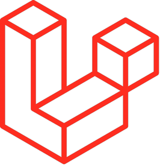

Laravel: Contenido multimedia
Desarrollador explicando beneficios del uso de Laravel
Este video se trata de un tutorial de como utilizar Laravel desde 0
El desarrollo de aplicaciones web y sitios web se ha vuelto cada vez más sencillo en los últimos años. Incluso los más reacios a la tecnología se han vuelto bastante hábiles con productos como WordPress y Wix. Para los desarrolladores más avanzados, existe una gran cantidad de herramientas que ayudan a simplificar el proceso de desarrollo. Una de las más útiles de esas herramientas es Laravel.
Laravel es un framework de código abierto para desarrollar aplicaciones y servicios web con PHP 5, PHP 7 y PHP 8. Su filosofía es desarrollar código PHP de forma elegante y simple, evitando el "código espagueti". Fue creado en 2011 y tiene una gran influencia de frameworks como Ruby on Rails, Sinatra y ASP.NET MVC.2 Laravel tiene como objetivo ser un framework que permita el uso de una sintaxis elegante y expresiva para crear código de forma sencilla y permitiendo multitud de funcionalidades. Intenta aprovechar lo mejor de otros frameworks y aprovechar las características de las últimas versiones
Se trata de framework PHP y utiliza un lenguaje de scripting en lugar de ser un lenguaje de programación PHP estricto. Aunque los lenguajes de scripting y los de programación están relacionados, tienen varias diferencias notables, principalmente en la facilidad de uso y la velocidad de ejecución. Los lenguajes de scripting son lenguajes interpretados específicos de la plataforma. Por el contrario, los lenguajes de programación son lenguajes compilados e independientes de la plataforma. Al ser específicos de la plataforma, los lenguajes de scripting dependen del compilador de la aplicación en la que se trabaja.
Gran parte de Laravel está formado por dependencias, especialmente de Symfony, esto implica que el desarrollo de Laravel dependa también del desarrollo de sus dependencias. La influencia de Laravel ha crecido rápidamente desde su lanzamiento. En la comunidad de desarrolladores es considerado como alternativa sencilla de usar pero que tiene todas las funcionalidades que debe tener un framework. Ha sido descargado más de 20'500,000 de veces, y se espera que supere en popularidad a otros frameworks ya establecidos más antiguos.
Desarrollador explicando beneficios del uso de Laravel
Este video se trata de un tutorial de como utilizar Laravel desde 0